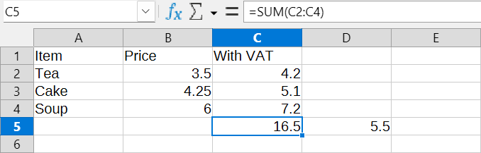

Formulas
OpenDocumentSpreadsheets reads and writes formulas in the notation LibreOffice shows in its formula bar: =SUM(A1:B2,1), =AVERAGE(A1:A10,'Other sheet'.B2). In the file, OpenDocument stores them in OpenFormula syntax (of:=SUM([.A1:.B2];1)), which raw = true reads and writes.
using OpenDocumentSpreadsheets
using OpenDocumentSpreadsheets: getFormula
xf = newods("Prices")
sh = xf["Prices"]
sh["A1:C1"] = ["Item" "Price" "With VAT"]
sh["A2:B4"] = ["Tea" 3.5; "Cake" 4.25; "Soup" 6]
for r in 2:4
setFormula(sh, "C$r"; val = "=B$r*1.2")
end
setFormula(sh, "C5"; val = "=SUM(C2:C4)")
setFormula(sh, "D5"; val = "of:=[.C5]/3", raw = true)
getFormula(sh, "C5") # "=SUM(C2:C4)"
getFormula(sh, "C5"; raw = true) # "of:=SUM([.C2:.C4])"<!– shot: formulas cells=5x6 cursor=C5 bar –>

The notation
- English function names, with
,between arguments. - In inline arrays,
,between columns and;between rows ({1,2;3,4}). - References name their sheet with
.(Sheet2.A1), as in LibreOffice. - Functions that LibreOffice stores under another name are translated with LibreOffice's table of names:
IFSis stored asCOM.MICROSOFT.IFS,CEILING.XCLasCOM.MICROSOFT.CEILING, and so on.
getFormula and the getters on other pages are public but not exported: import them by name, as above, or write OpenDocumentSpreadsheets.getFormula.
Results
OpenDocumentSpreadsheets doesn't calculate formulas. A formula written here has no result until the file is opened in LibreOffice (or another spreadsheet program), which calculates it. A formula read from a file gives the result LibreOffice last saved with it.